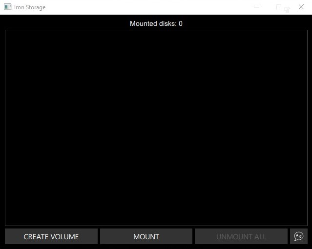
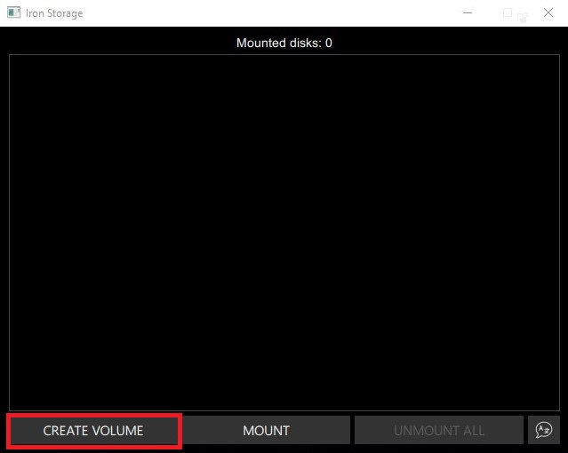
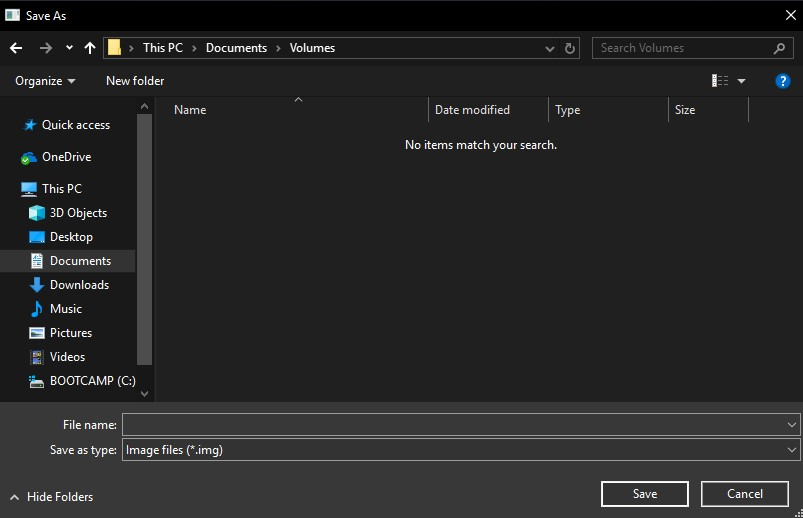
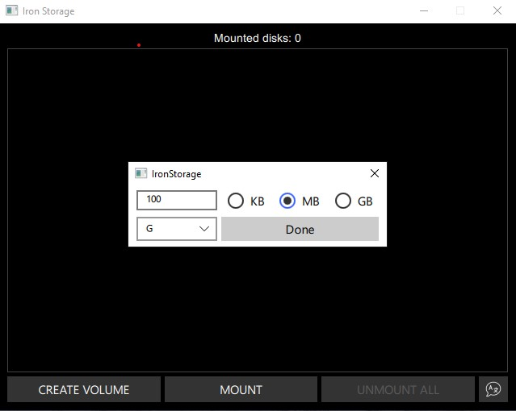
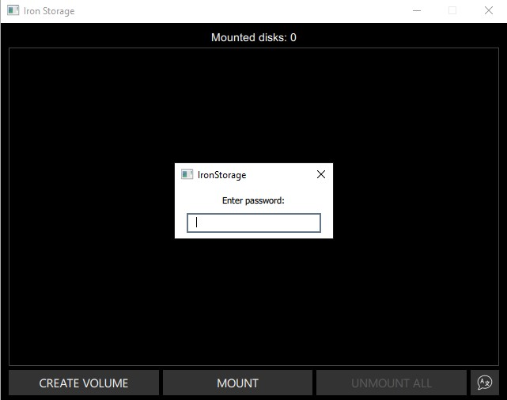
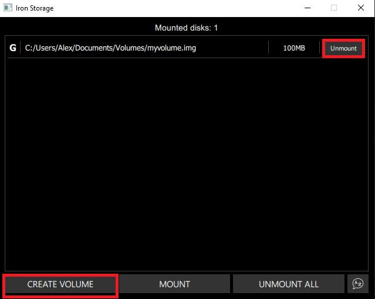
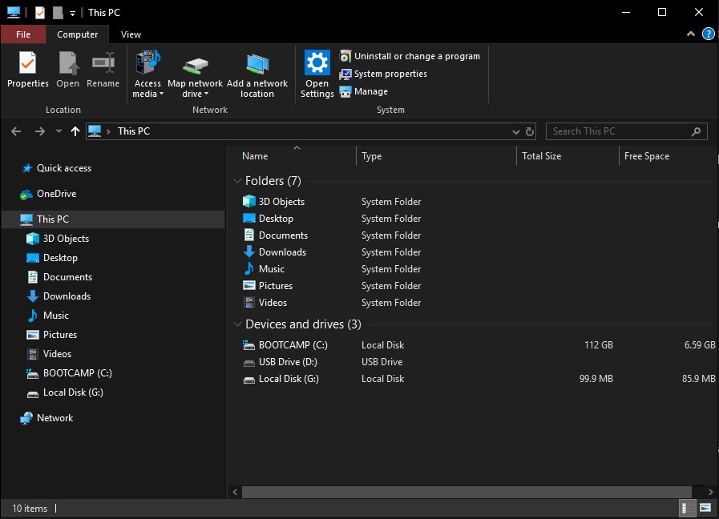

IronStorage is a software system for establishing and maintaining an on-the-fly-encrypted volume (data storage device). On-the-fly encryption means that data is automatically encrypted right before it is saved and decrypted right after it is loaded, without any user intervention. No data stored on an encrypted volume can be read (decrypted) without using the correct password/keyfile(s) or correct encryption keys. Entire file system is encrypted (e.g., file names, folder names, contents of every file, free space, meta data, etc).
Here’s how to quickly get started with the IronStorage.
- Description
- Quick start
- Eecryption Algorithm
- Credits
- Community
How to Create and Use a IronStorage Container This chapter contains step-by-step instructions on how to create, mount, and use a IronStorage volume. We strongly recommend that you also read the other sections of this manual, as they contain important information.
Files can be copied to and from a mounted IronStorage volume just like they are copied to/from any normal disk (for example, by simple drag-and-drop operations). Files are automatically being decrypted on the fly (in memory/RAM) while they are being read or copied from an encrypted IronStorage volume. Similarly, files that are being written or copied to the IronStorage volume are automatically being encrypted on the fly (right before they are written to the disk) in RAM. Note that this does not mean that the whole file that is to be encrypted/decrypted must be stored in RAM before it can be encrypted/decrypted. There are no extra memory (RAM) requirements for IronStorage.
Let’s suppose that there is an .avi video file stored on a IronStorage volume (therefore, the video file is entirely encrypted). The user provides the correct password (and/or keyfile) and mounts (opens) the IronStorage volume. When the user double clicks the icon of the video file, the operating system launches the application associated with the file type – typically a media player. The media player then begins loading a small initial portion of the video file from the IronStorage-encrypted volume to RAM (memory) in order to play it. While the portion is being loaded, IronStorage is automatically decrypting it (in RAM). The decrypted portion of the video (stored in RAM) is then played by the media player. While this portion is being played, the media player begins loading another small portion of the video file from the IronStorage-encrypted volume to RAM (memory) and the process repeats. This process is called on-the-fly encryption/decryption and it works for all file types (not only for video files).
Note that IronStorage never saves any decrypted data to a disk – it only stores them temporarily in RAM (memory). Even when the volume is mounted, data stored in the volume is still encrypted. When you restart Windows or turn off your computer, the volume will be dismounted and files stored in it will be inaccessible (and encrypted).
How to Create and Use a Iron Storage Container
This chapter contains step-by-step instructions on how to create, mount, and use a Iron Storage volume.
Step 1
If you have not done so, download and install Iron Storage. Then launch Iron Storage by double-clicking the file Iron Storage.exe

Step 2
The main Iron Storage window should appear. Click Create Volume (marked with a red rectangle for clarity)

In this step you need to choose where you wish the Iron Storage volume to be created. Note that a Iron Storage container is just like any normal file. It can be, for example, moved or deleted as any normal file. It also needs a filename, which you will choose in the next step.

Select the desired path (where you wish the container to be created) in the file selector. Type the desired container filename in the File name box
Click Save.
The file selector window should disappear.
Step 3

Here we specify that we wish the size of our Iron Storage container to be 100 megabyte and letter which will be use to display disk name. You may, of course, specify a different size. After you type the desired size in the input field (marked with a red rectangle), click Done.

Enter your password. Note that password length should be bigger or equal 8 character and contain only unicode symbols

You can see created volume in application and in File Explorer

Unmount volume
If you want unmount volume simply press Unmount button in front of disk description or press Unmount All button in bottom right corner
The Advanced Encryption Standard (AES) specifies a FIPS-approved cryptographic algorithm (Rijndael, designed by Joan Daemen and Vincent Rijmen, published in 1998) that may be used by US federal departments and agencies to cryptographically protect sensitive information. Iron Storage uses AES with 14 rounds and a 256-bit key (i.e., AES-256, published in 2001).
Thanks to Bo Brantén for the drivers on https://www.acc.umu.se/~bosse/.